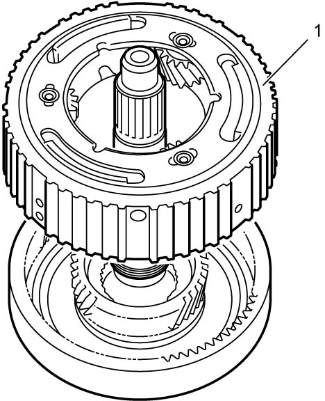

5A
| Front Planetary Gear Assembly and Input Shaft Disassembly and Reassembly |
Disassembly
1)Remove front planetary carrier washer No.1 (1).

 "Expand image")
2)Remove front planetary gear assembly (1).

 "Expand image")
3)Remove front planetary carrier washer No.2 (1).
NOTE:
If front planetary carrier washer No.2 is not found on front planetary gear assembly, it may have been left in input shaft.
 "Expand image")
4)Remove front planetary sun gear (1).
 "Expand image")
5)Remove front planetary carrier thrust bearing (1) and front planetary carrier thrust washer (2).
 "Expand image")
6)Remove input shaft seal rings (1).
 "Expand image")
7)Remove input shaft thrust washer (1) and input shaft thrust bearing (2).
NOTE:
If input shaft thrust washer and input shaft thrust bearing are not found on input shaft, it may have been left in front of forward clutch.
 "Expand image")
8)Remove input shaft seal rings (1).
 "Expand image")
Reassembly
Reverse disassembly procedure noting the following points.
•Use new seal rings.
•Apply ATF to seal rings before installation.
•Install thrust bearing and thrust washer in correct direction referring to “Thrust Bearing, Thrust Bearing Race and Thrust Washer” under A/T Assembly Components.
•First, tighten seal ring to 5 mm (0.2 in.), and then install seal ring.
•Do not open input shaft seal rings too wide to attach.
•Apply ATF to seal rings before installation.
•Install thrust bearing and thrust washer in correct direction referring to “Thrust Bearing, Thrust Bearing Race and Thrust Washer” under A/T Assembly Components.
•First, tighten seal ring to 5 mm (0.2 in.), and then install seal ring.
•Do not open input shaft seal rings too wide to attach.
 "Expand image")
| [A]: | Rear side | “a”: | 5 mm (0.2 in.) |
| [B]: | Front side |